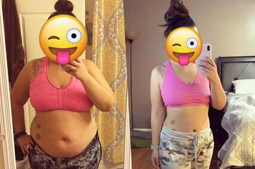
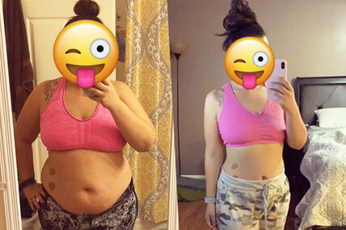
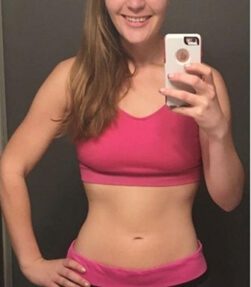
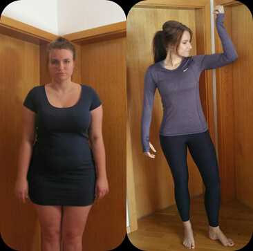
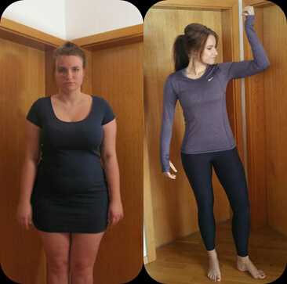
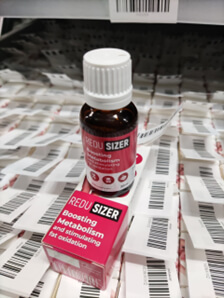

Diana Mórová: "Môj manžel ma nazval tučnou a opustil ma. Ale za dva mesiace som schudla 15 kg, takže mohol požiadať o odpustenie a oľutovať rozvod.
Diana Mórová prežívala depresie, týždenné slzy a odpor k vlastnému odrazu v zrkadle kvôli nadváhe. Ona to však prekonala a je pripravená pomôcť každému získať vysnívanú postavu bez hladoviek, kolapsov a výčitiek svedomia z nadmerného jedenia. Herečka sa z 80 kg už dostala k štíhlemu telu a šťastnému životu.
Reportér: Ahoj, Diana! Je dobré vidieť ťa takého šťastného a usmievavého. Všetci sme si všimli, ako rýchlo si sa zmenil.
Diana: Dobrý deň, ďakujem! Chudnem. Pred časom som vážil asi 80 kg. Bolo to naozaj depresívne. Teraz vážim 64,5 kg. Podarilo sa mi schudnúť celkovo 15 kg. Bolo to jednoduchšie, ako som si myslel. Áno, na začiatku mojej cesty bolo veľa chýb. Narazil som na šarlatánskych odborníkov, ktorí odo mňa vymáhali peniaze, ale nemali žiadne výsledky. Stratila som drahocenný čas, ktorý som mohla venovať zlepšeniu svojho vzhľadu.
Reportér: To je úžasný výsledok! Začnime však od začiatku. Videli sme vaše fotografie pred schudnutím. Ako vám nadváha zasahovala do života?
Diana: Moja váha bola vždy nestabilná. Bolo to ako chodiť po tenkom ľade, keď som išla na dovolenku alebo som si počas sviatkov dovolila veľa chutného jedla. Za týždeň som mohol pribrať päť kíl. A viem určite, že mnohé ženy trpia rovnakými skokmi v hmotnosti. Kedysi som si myslela, že sa tomu dá predísť neustálym držaním diét, ale nie je to také jednoduché.
Kedysi som jedol sladkosti, tuk, soľ. Na začiatku som sa cítil dobre, ale ku koncu jedla som sa nenávidel. Povedal som si: "Pozri sa na seba, nevieš včas zavrieť ústa?"
Diana: Najprv som sa rozhodol bojovať na vlastnú päsť. Vyskúšala som štokholmskú diétu, pri ktorej som zo svojho jedálnička vylúčila sladkosti. Ale nemohla som žiť ani týždeň bez svojho zvyčajného chutného jedla a bolo to pre mňa veľmi frustrujúce. Vyčítala som si každé sústo, ktoré som zjedla, a myslela som si, že som slabá. Bolo to strašné obdobie.
Reportér: A čo váš muž? Podporil vás v tej chvíli?
Diana: Žiaľ, nie. V tom čase som bola vydatá za Juraja Mokrého, ale neustále sme sa hádali, pretože sme mali nadváhu. Uvedomila som si, že môj muž ma prestal mať rád, že ma už nechcel ako ženu. A to som jedol aj ja! Cukor sa stal mojou obľúbenou drogou. Akoby som našiel únik od všetkých problémov vonkajšieho sveta. Zavrela som sa v kúpeľni s čokoládou, plakala som, nenávidela som sa, ale nemohla som prestať jesť. Keď váha ukázala 80 kg, pochopil som svoj problém, ale bolo už neskoro.
Diana sa snažila usmievať vedľa muža, ktorý ničil jej sebavedomie a sebalásku.
Môj vyvolený odo mňa odišiel s tým, že sa mu nepáčia záhyby a celulitída. Zostala som sama s 80 kg na váhe a zničeným životom. Vtedy som to vnímal ako koniec.
Reportér: Je to veľmi častý príbeh, keď muži odchádzajú, ak žena začne mať nadváhu. Ako ste sa vtedy cítili?
Diana: Jedným slovom - hrozné. Len málo ľudí hovorí o emocionálnom hlade. Ale takto to vyzerá:
- - keď nie ste hladní, strkáte do seba jedlo
- - cítite sa zhypnotizovaní a potom zistíte, že ste zjedli polovicu potravín v chladničke
- - Neustále máte chuť na sladkosti a nezdravé jedlá, akoby vám niečo bránilo jesť normálne jedlo;
- - nenávidíte sa po každom jedle, aj keď ste zjedli len šalátový list.
Je ľahké povedať, aby ste zavreli ústa a nejedli. Ale každý, kto sa stretol s podobným problémom, vie, že je to nemožné. Už nemáte kontrolu nad sebou, svojimi emóciami a svojím telom.
Tento stav trval celé tri mesiace. Stále som priberala. Moja publicita sa skončila, môj vzťah sa rozpadol, môj odraz v zrkadle ma každým dňom viac a viac iritoval. Videl som ju ako obrovského slona namiesto dievčaťa v najlepších rokoch života. Prepadala som sa do priepasti viny, sebaľútosti a najhorších myšlienok, aké ma napadli.
Reportér: Pre mnohé ženy je to naozaj veľmi bolestivý príbeh. Pokiaľ viem, vyskúšali ste veľa diét a dokonca ste cvičili tabatu, ale z nejakého dôvodu neboli žiadne výsledky. V čom je problém?
Diana: Áno, presne to sa stalo. Keď mi kamarátka povie, že sa opäť chystá držať diétu, poviem jej, že mi je jej ľúto. O dva týždne neskôr príde s plačom a jej váha klesne na pôvodnú hodnotu. To sa stalo aj mne.
Najprv som sa snažila vzdať sladkostí, tuku a múky. Výsledky sa dostavili, ale akonáhle som sa chcela vrátiť k obvyklej strave, váha sa vrátila. A niekedy sa to ešte zväčšilo. Nie je možné žiť len z listov a kuracích pŕs.
Opäť som sa v sebe sklamal. Moje oblečenie sa zväčšilo na veľkosť XXL, telo mi pokrývala celulitída a cítila som sa nechutne.
Reportér: Ale ako ste dosiahli toto číslo na váhe?
Diana: Toľko času som premárnila diétami, ktoré všetko len zhoršili a zhoršili môj zdravotný stav. A mohol som schudnúť efektívne a bez poškodenia zdravia a morálky.
Veľkou výhodou môjho povolania je, že som vždy informovaný o všetkých novinkách. A jedna správa mi doslova zachránila život. Katka Koščová (všetci ju poznáte) bola v podobnej situácii. Poradila mi liek, ktorý ma dostal zo sebapoškodzovania, depresií a nenávistných čísel na váhe.
Reportér: Máte spôsob, ako zaujať. Pri pohľade na vás chcem vedieť všetky podrobnosti o tomto zázračnom lieku.
Diana: Trvalo mi dva mesiace, kým som schudol 15 kg. Uctievaná postava na váhe, slzy šťastia. A potom to bolo ako v rozprávke: nové vzťahy, stúpanie po kariérnom rebríčku. A čo je najdôležitejšie - lásku k sebe, ktorú som stratila a už nikdy nenašla. Toto je ReduSizer, prírodný spaľovač tukov.
Teraz sa pozerám na svoj odraz v zrkadle a nechcem od neho odísť.
Keď som videl zloženie ReduSizer, nemohol som uveriť vlastným očiam. Obsahuje len bylinné výťažky (opuncia, guarana), zelený čaj a vitamíny. Pre mňa je to veľmi dôležité. Nechcel som mať žiadne žalúdočné problémy a stále som sa snažil zbaviť problémov po tých zbytočných diétach.

Reportér: Dôverujete tak ľahko? Ako ReduSizer funguje?
Diana: Ak mám byť úprimný, tak nie. Dlho som mala pochybnosti, ale už som bola taká unavená z každodenného plaču, pretože som zjedla cukrík, že som sa pevne rozhodla - teraz alebo nikdy.
Teraz už takmer vôbec necvičím, jem, čo chcem, zbavujem sa celulitídy a strií a môj bývalý manžel sa ma snažil získať späť... To všetko vďaka aplikácii ReduSizer.
Prvý deň užívania prestaneš pociťovať hlad. Dala som si len kávu a to bolo všetko, viac som nechcela. A potom sa do dvoch týždňov začne spaľovanie tukov. Nie svaly a voda! Je to úžasná technológia. Za 6-7 týždňov je reálne stratiť približne 10 % tuku. To je približne 12-15 kg hmotnosti navyše.
Konečne žijete, muži vás majú radi a obdivujú sa v akomkoľvek oblečení (dokonca aj v tesnom alebo priehľadnom).
Reportér: Úžasné! Čo by ste chceli odkázať ženám, ktoré práve teraz začínajú svoju cestu chudnutia?
Diana: Žena by sa mala mať rada. A milovať sa znamená nájsť pre seba to najlepšie. Najlepšie nástroje, jedlo, muži, práca. Sám som to urobil. A vy sa môžete poučiť z mojich chýb. Nadváha nie je trestom, ak viete, ako sa správať. A po tomto rozhovore presne viete, čo máte robiť.
Nepodliehajte problémom, zlým mužom a stresu. Si to najcennejšie, čo máš!
Keď si objednáte produkt, dostanete ZDARMA konzultácie s odborníkom na výživu, ktorý vám pomôže vytvoriť INDIVIDUÁLNE stratégiu chudnutia pomocou ReduSizer.
Platí aj pre našich čitateľov 50% ZĽAVA propagačným kódom Diana. Zľavu môžete využiť len na našej webovej stránke. Poponáhľajte sa! Ponuka je obmedzená!
Na sklade
-
 Irena D.Bolo to ako čítať o sebe 😭 ďakujem za takýto úprimný príbeh🙏🏻❤️ Vždy sa mi zdalo, že celebrity nikdy nemajú problémy. Podobná cesta transformácie čaká aj mňa.
Irena D.Bolo to ako čítať o sebe 😭 ďakujem za takýto úprimný príbeh🙏🏻❤️ Vždy sa mi zdalo, že celebrity nikdy nemajú problémy. Podobná cesta transformácie čaká aj mňa. -
 Zana1987Neviem... Nemyslím si, že každý môže schudnúť toľko. Každá maličkosť tu zohráva svoju úlohu. Mám pocit, že som jediná, kto nemôže normálne schudnúť. Mám pocit, že som jediná, koho počas tehotenstva a pôrodu zasiahol tank. Pri dojčení som dokonca pribrala, aj keď som v skutočnosti nič nejedla. Dojčila som do 1,1 roka, potom sa mi podarilo schudnúť 5 kg. A to je všetko, hmotnosť sa nezmenila. Absolvovala som veľa maratónov, snažila som sa cvičiť doma, ale dieťa mi to nedovolilo. Snažil som sa správne stravovať, držať diéty. Schudol som najmenej 500 g, ale aj to sa mi vrátilo do bokov.
Zana1987Neviem... Nemyslím si, že každý môže schudnúť toľko. Každá maličkosť tu zohráva svoju úlohu. Mám pocit, že som jediná, kto nemôže normálne schudnúť. Mám pocit, že som jediná, koho počas tehotenstva a pôrodu zasiahol tank. Pri dojčení som dokonca pribrala, aj keď som v skutočnosti nič nejedla. Dojčila som do 1,1 roka, potom sa mi podarilo schudnúť 5 kg. A to je všetko, hmotnosť sa nezmenila. Absolvovala som veľa maratónov, snažila som sa cvičiť doma, ale dieťa mi to nedovolilo. Snažil som sa správne stravovať, držať diéty. Schudol som najmenej 500 g, ale aj to sa mi vrátilo do bokov. gerda_18Netreba zúfať! Trvalo mi dlho, kým som sa dostal do formy. Pred kúpou Redusizéra som zvážil 93. Teraz mám už 76 kg))) Trikrát som sa zrútil a všetko som zjedol. Ale na váhe som si nevšimol žiadne nové kilá, to je veľmi prekvapujúce
Zana1987Môžem dostať fotografiu?
Zana1987Nevadí mi to. 
gerda_18Netreba zúfať! Trvalo mi dlho, kým som sa dostal do formy. Pred kúpou Redusizéra som zvážil 93. Teraz mám už 76 kg))) Trikrát som sa zrútil a všetko som zjedol. Ale na váhe som si nevšimol žiadne nové kilá, to je veľmi prekvapujúce
Zana1987Môžem dostať fotografiu?
Zana1987Nevadí mi to.  -
Kamila_2403Diana vie, ako neuveriteľne motivovať!!!!!! Hneď som si ho rezervoval!
-
 Permainų-vėjaiKoľko môžete stratiť za mesiac?
kamileeeeeeeeeeeeZo 74 kg som schudol 7 kg.
Permainų-vėjaiA čo objem?
kamileeeeeeeeeeeeBoky 10 cm, pás 6 cm
Permainų-vėjaiKoľko môžete stratiť za mesiac?
kamileeeeeeeeeeeeZo 74 kg som schudol 7 kg.
Permainų-vėjaiA čo objem?
kamileeeeeeeeeeeeBoky 10 cm, pás 6 cm -
Marta_martaChcel by som sa pochváliť. Na fotografiách to nie je vidieť, ale cítim sa veľmi tenká a ľahká. Som veľmi šťastný. Zmenil sa aj môj vnútorný stav. Vďaka za ReduSizer)) 
PoužívateliaMôžete mi poslať fotografiu pred schudnutím?
Marta_martaSamozrejme.

 Rasita D.Chápem vašu radosť! Dnes som vyťahovala staré oblečenie zo skrine a rozhodla som sa vyskúšať si športové legíny, na ktoré som už zabudla. Zapli si na mňa zips!!!!!!! Rejem od šťastia, aj keď som celý deň chodila a nariekala, že nemám čo na seba. Som taká šťastná!!!! 
Rasita D.Chápem vašu radosť! Dnes som vyťahovala staré oblečenie zo skrine a rozhodla som sa vyskúšať si športové legíny, na ktoré som už zabudla. Zapli si na mňa zips!!!!!!! Rejem od šťastia, aj keď som celý deň chodila a nariekala, že nemám čo na seba. Som taká šťastná!!!!  -
AnonimasMám rozdvojenú osobnosť. Jedna osobnosť chce schudnúť, druhá chce jesť. Čo robiť????
-
rutaMôžem užívať tento liek, ak mám inzulínovú rezistenciu?
Kamila_2403Áno, môžete. Túto otázku som položila aj odborníkovi na výživu, ktorý ma konzultoval pri objednávaní. Povedal, že takéto kontraindikácie nie sú. 
-
ZitataJe určite dobré, že sa mi podarilo schudnúť 12 kg pomocou ReduSizer. Čo však robiť s minuloročnou bundou XXXL? Dievčatá, možno to odo mňa niekto kúpi?
-
Jūsų manijaDianu úprimne obdivujem. Dobre sa jej darí, naďalej žije rušný život a má sa rada.